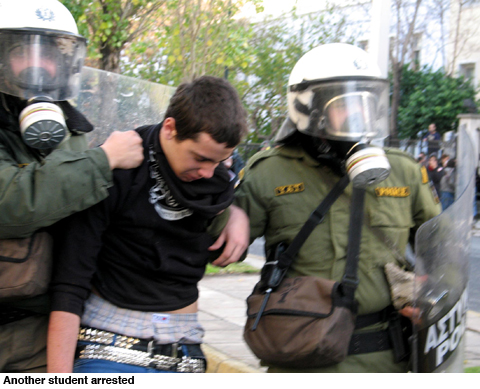

| Details |
The general strikes in Greece, involving millions of workers in the public and private sectors, marks a turning point in the political situation throughout Europe. It represents the most significant manifestation of a growing movement of resistance to the attempt by Europe’s governments and corporations to make workers pay for the economic crisis and the multi-billion-euro bailout of the banks.
Two fundamental characteristics have emerged: the movement assumes a cross-border and international character, and the workers immediately come up against the bankruptcy of their old trade union and political organizations—all of which are wedded to a nationalist programme.
The basis for a continent-wide social and political movement is rooted in the common problems faced by workers in a globalised economy dominated by huge international banks and corporations. These organizations, and the financial oligarchy they represent, are demanding unprecedented cuts in social programmes, wages and pensions in order to pay for the trillions of dollars handed over by European governments to the banks. They are speculating against any economy that is seen as debt-heavy and unwilling to carry forward the necessary attacks on the working class, thereby increasing the financial pressure on the targeted governments.
But as yet, the objectively international character of the movement developing in Europe finds no political or organizational expression. On the contrary, everywhere it meets with the determined opposition of the trade unions, to the point of outright sabotage.
There is no national solution to this crisis. Behind PASOK stand the state apparatus in Greece, the ruling classes of America and Europe, the banks and major corporations. Workers in Spain, Portugal, France, Germany, Britain and Ireland have also struck in opposition to austerity measures. The struggle being waged by the workers in Greece must be seen as just one front in this developing struggle by workers throughout Europe, which must assume a conscious, organised and programmatic form in a Europe-wide and international struggle for a socialist alternative.
Attend the meeting of the International Students for Social Equality to hear our report from Athens and discuss this perspective. Click here for more information. |